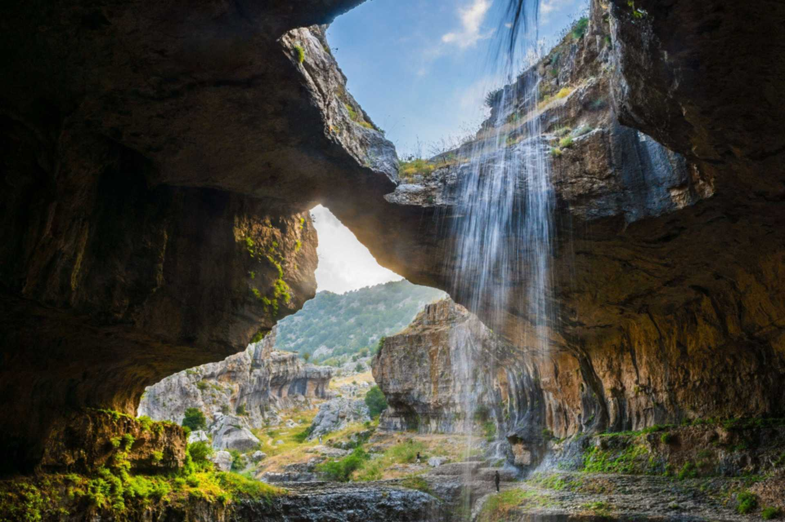
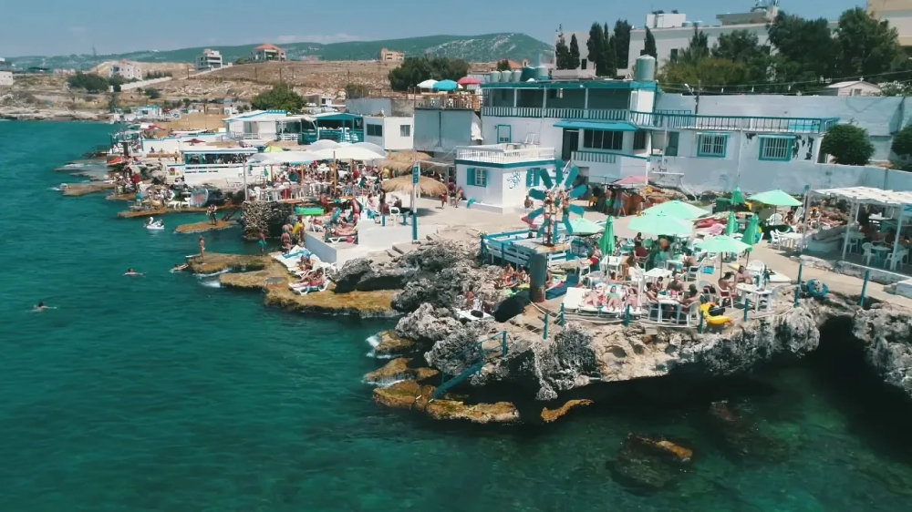
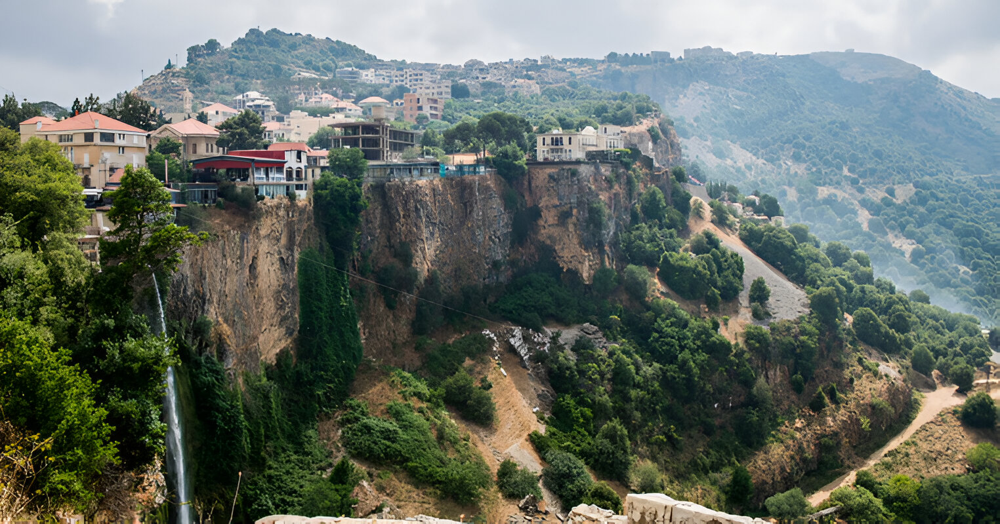
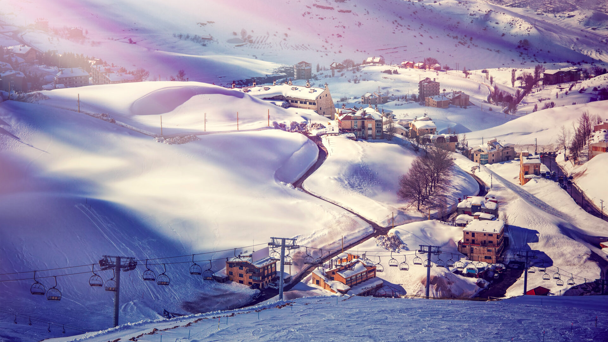
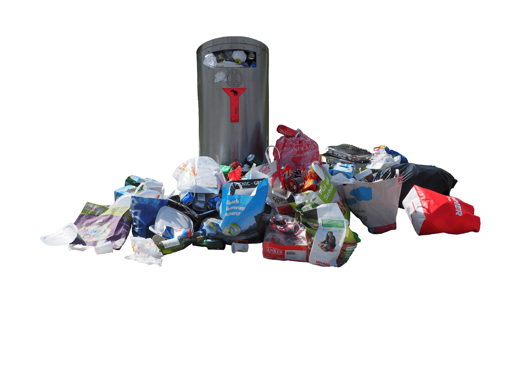
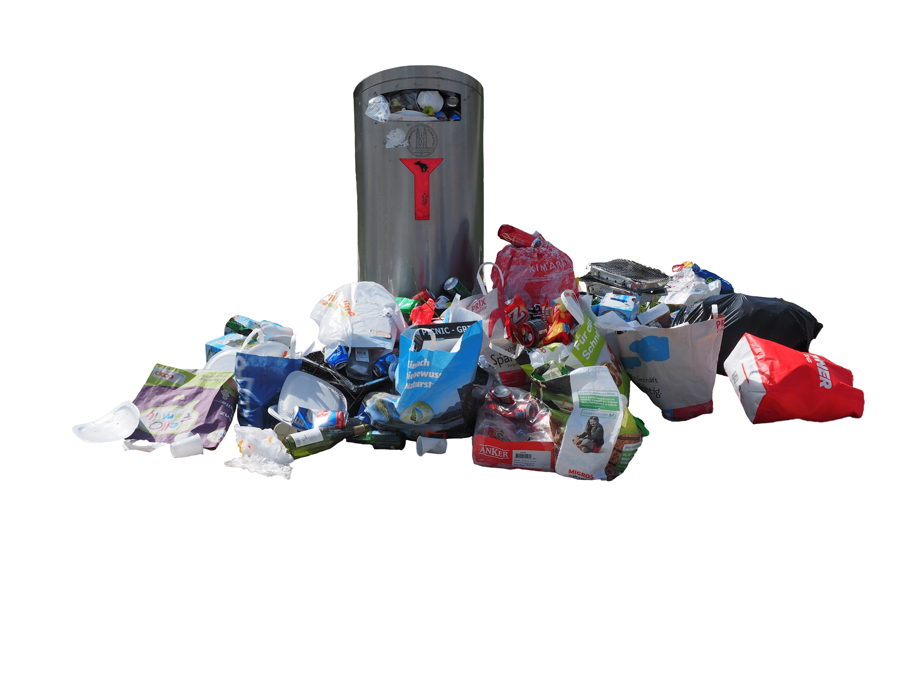

The Lebanese Heven
Lebanese nature is a blend of diverse landscapes, breathtaking in its variety and beauty. Stretching along the eastern Mediterranean, Lebanon boasts snow-capped mountains, lush green valleys, and pristine beaches, all within close proximity. The iconic Cedar trees, a symbol of national pride and resilience, dot the high mountain ranges and reflect the country’s ancient heritage. Lebanon's rivers, such as the Litani and the Dog River, weave through its rugged terrain, nourishing forests, and supporting a wide range of flora and fauna. The Qadisha Valley, a UNESCO World Heritage site, offers visitors a glimpse into Lebanon's rich biodiversity and spiritual history with its dramatic cliffs and ancient monasteries. From the green hills of Jezzine to the vibrant Bekaa Valley, Lebanese nature offers a sanctuary of serenity and adventure, promising hikers, beachgoers, and nature enthusiasts a unique experience at every turn.
Lebanese Beaches
Lebanese beaches offer a unique blend of natural beauty, cultural vibrancy, and Mediterranean charm. Stretching along the country’s western coast, Lebanon’s beaches vary from lively sandy stretches near bustling cities like Beirut and Jounieh to hidden pebble coves in Batroun and Tyre. The crystal-clear waters of the Mediterranean provide the perfect setting for swimming, snorkeling, and diving, while picturesque rocky shores add a rugged beauty to the landscape. Many beaches are lined with cafes, seafood restaurants, and beach clubs that capture the vibrant energy of Lebanese social life. Ancient ruins and historic sites, like those in Byblos, dot the coastline, making the beach experience in Lebanon a mix of relaxation and historical exploration. From sunrise to sunset, the Lebanese coastline is a mesmerizing destination for those seeking both leisure and adventure in a uniquely scenic and culturally rich environment.
Jezzine
Jezzine, a picturesque town in southern Lebanon, is known for its breathtaking landscapes, waterfalls, and rich cultural heritage. Nestled in the Chouf Mountains, Jezzine is surrounded by dense pine forests, terraced hills, and views that stretch all the way to the Mediterranean coast. The town’s highlight is the stunning Jezzine Waterfall, cascading over 90 meters and one of the tallest in Lebanon, attracting visitors from near and far. Jezzine is also celebrated for its artisanal cutlery, particularly its traditional hand-crafted knives and daggers with intricate designs, a craft that has been passed down through generations. The town’s architecture, with its old stone houses and red-tiled roofs, reflects the charm and character of Lebanese mountain villages. Known for its friendly locals, fresh air, and serene beauty, Jezzine is a popular destination for hikers, nature lovers, and those looking to experience authentic Lebanese village life amid scenic mountain views.
Faraya
Faraya, a charming mountain town in Lebanon, is renowned for its breathtaking snowy slopes and vibrant ski scene. Located in the Mount Lebanon range, Faraya transforms into a winter wonderland each year, drawing skiers and snowboarders from around the world to its famed Mzaar Kfardebian resort, the largest ski resort in the Middle East. With altitudes reaching over 2,400 meters, Faraya offers panoramic views that stretch from the Mediterranean coastline to the snow-capped peaks. Beyond skiing, the town is a haven for outdoor enthusiasts year-round, with hiking trails, ATV rides, and scenic picnic spots among its rugged mountains. The town’s alpine architecture, cozy lodges, and lively après-ski atmosphere make it a welcoming retreat. Whether under a blanket of snow or the warm glow of summer, Faraya remains a beloved destination for both adventure and relaxation, embodying the natural beauty and dynamic spirit of Lebanon’s mountain regions.
 
